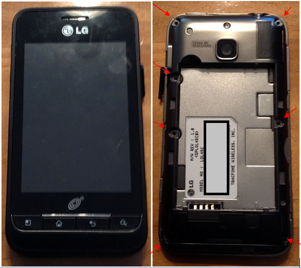
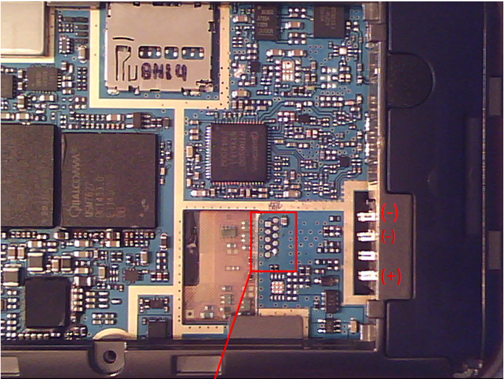
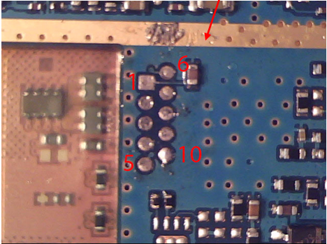
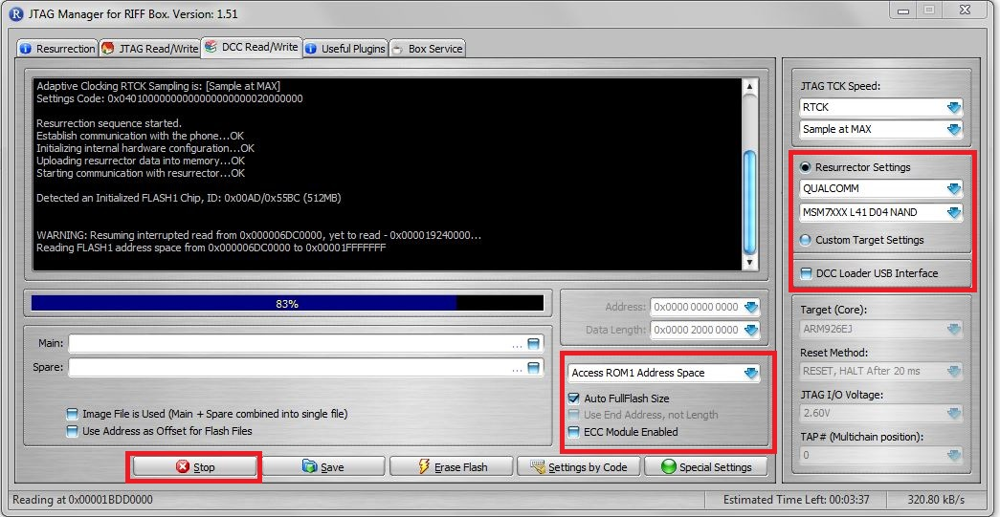

Jtag lg l45c tracfone
LG - L45C -Optimus 2
This phone is supported by the Tracfone. This uses a Qualcomm 7627 Processor and comes standard with Android version 2.3 and has internal storage of 512 MB. This phone is unsupported by RIFF Box for the JTAG process for resurrector. RIFF does support the Qualcomm 7627 processor.

Getting Started
What you need:
- Riff Box
- USB to Micro USB cord
NAND Dump Procedure
- Disassemble the rear housing of the phone and metal plate covering the PCB board.
- Connect the RIFF box to the PC via USB.
- Connect the RIFF box to the PCB via the JTAG pins.
- Connect the PCB to a Micro USB cord and power via a power supply.
- Start the "RIFF box" software.
- Power the PCB.
- Dump the NAND.
The Taps are located under the white LG sticker. The easiest way to access the TAPS is to remove the back cover of the phone. first remove the 7 screws (small Philips) and then the metal cover over the board.


The TAPS order is as follows:
- 1= TCK
- 2= RTCK
- 3= TDO
- 4= TDI
- 5= TMS
- 6= TRST
- 7= VCC
- 8= NRST
- 9= No Used
- 10=GND
This order applies to the RIFF box. Other boxes refer to the VCC as VREF and NRST as RESET.
After the wires are connected to the board, the phone is powered by the USB connection to a wall charger. May need a DC power supply to supplement the phone power. In that case, connect the DC power supply to the battery connections and set the DC power supply to 4.0. May also need to attach the two negative leads. During testing, one LG phone only responded to an actual battery and not the power supply.
Launch the Riff Box JTAG Manager and use the following settings:
- JTAG TCK Speed = RTCK
- Resurrector Settings= Qualcomm MSM 7XXX L41 D04 NAND
- Auto FullFlash size

Then connect and get the ID, you should receive the dead body signal. Then read the memory.
Notes
The phone has a 512 MB NAND flash memory chip which should take approximately 30 minutes to download.